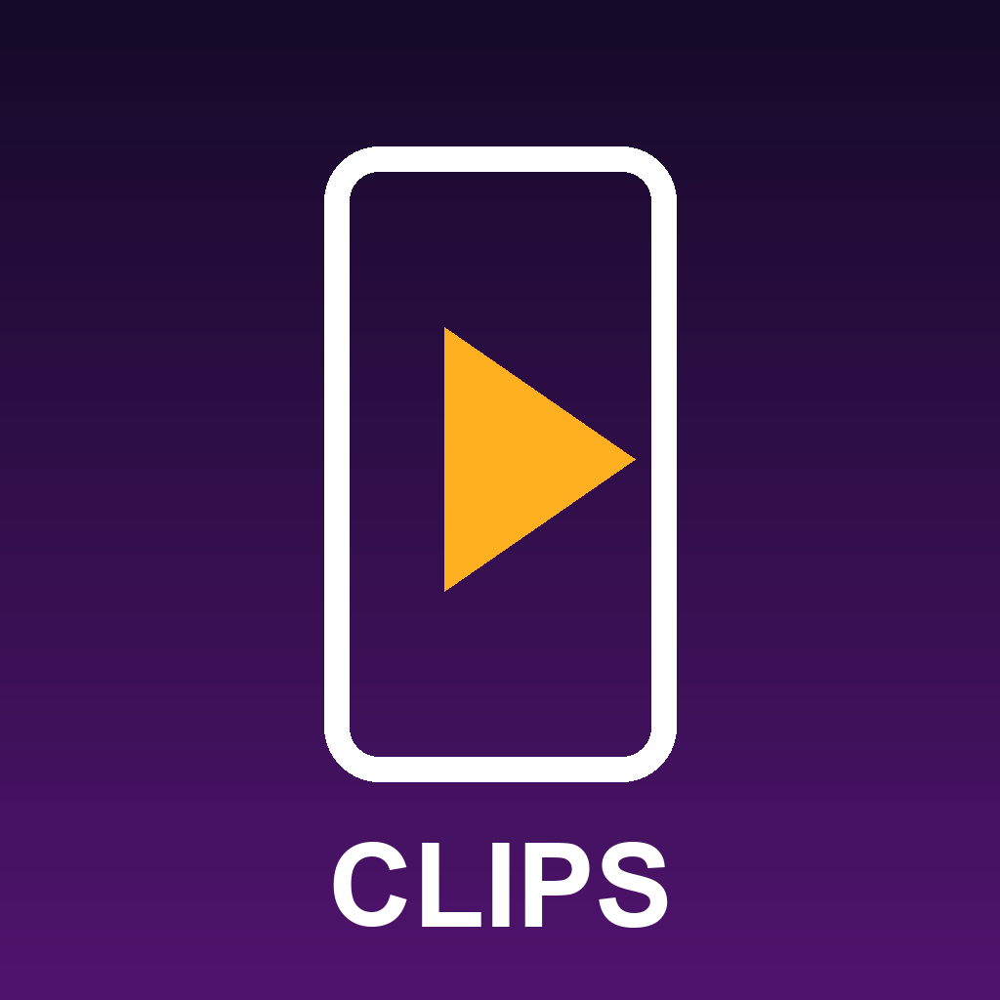

The best livestream moments, as vertical clips.
LivestreamClips is a desktop clip editor for a clip channel. It follows the livestreams of creators who have given permission, finds the moments where chat reacts most, and turns them into vertical 9:16 clips with captions and credit to the streamer.
The operator connects their own TikTok account with TikTok Login Kit. For each clip, the posting screen shows the connected account, a preview of the video, the caption, a privacy setting the operator must choose, comment/duet/stitch settings and a branded-content declaration. A clip is only uploaded to TikTok after the operator confirms.
Clips are only made from streams whose creators have given permission. Every clip credits the streamer. Creators can ask for clips to be removed at any time using the contact below.